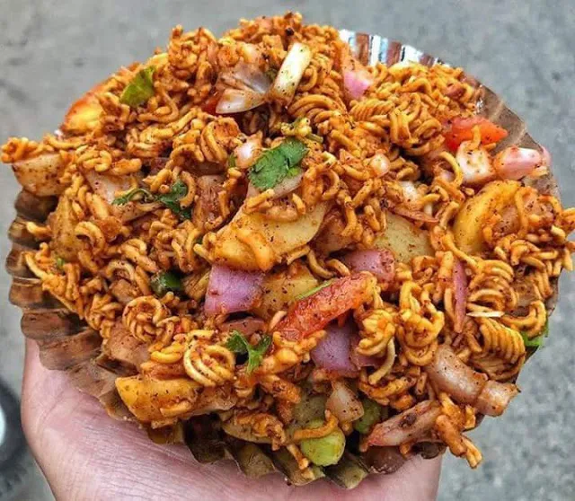

Chatpate recipe

Description
Chatpate is a very popular snack in every street stalls in Nepal and India. Nowadays serve in big restaurants. Chatpate is a very famous street food among teenagers as it consists of lots of mouthwatering flavors. It is a crunchy oil-free dish filled with veggies and lots of spices.
Ingredients
- One bowl of muri or puffed rice
- One cup of green peas
- Finely chopped onion
- One chopped tomato
- Two boiled potatoes
- Four-Five green chillies
- A packet Wai-wai noodle
- One cup dalmot
- Finely chopped cucumber
- One lemon
- Salt or Black Salt
- a pinch Cumin powder
- Chili powder as per your preference
- Chopped coriander
- A teaspoon of mustard oil
Steps
- First of all, take a big bowl and add peas, chopped onion, tomato, potatoes, chillies, and cucumber altogether
- Then add noodles, dalmot and puffed rice
- After that add cumin powder, chili powder, wai-wai noodle masala, a pinch of salt or black salt
- Add a tablespoon of mustard oil and then mix it properly
- Squeeze some lemon juice and then give it a stir
- Garnish with chopped coriander on top
- Its ready to serve